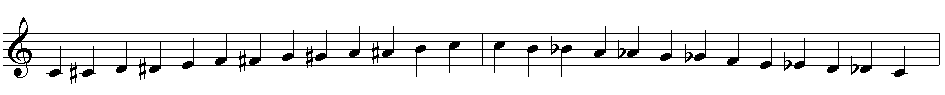
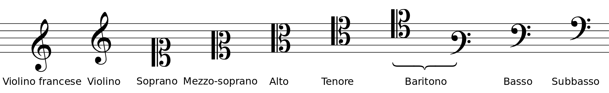

Teoria di base
Premetto che tutto ciò che è scritto in questa pagina fa riferimento all'attuale temperamento equabile.
Le note
Cominciamo a costruire il nostro sistema musicale da zero; per farlo iniziamo con il capire quali siano le sue componenti fondamentali, le note, e le relazioni tra di esse.
Una nota musicale è un simbolo grafico che indentifica un suono; le note si scrivono sul pentagramma, ovvero un insieme di cinque righe (o linee) parallele che individuano quattro spazi, entrambi numerati in ordine crescente dal basso verso l'alto), e il loro nome dipende dalla chiave utilizzata. Per motivi prettamente storici, le note sono in tutto le seguenti dodici (spolier, sono sette soltanto da un punto di vista diatonico, tra un po' sarà più chiaro):
Do, Do♯ (Re♭), Re, Re♯ (Mi♭), Mi, Fa, Fa♯ (Sol♭), Sol, Sol♯ (La♭), La, La♯ (Si♭), Si.
La chiave è un simbolo che si mette ad inizio pentagramma avente lo scopo di assegnare il nome alle note in base alla loro posizione su di esso secondo la seguente regola: la nota collocata sul rigo sul quale è posizionata* la chiave, prende il nome della categoria di chiavi alla quale appartiene. Tutte le altre note sono quindi derivate da questa, seguendo l'ordine precedentemente elencato, facendo attenzione al fatto che ogni rigo e ogni spazio fanno riferimento alle note da un punto di vista diatonico.
Non avendo ancora definito il concetto di grado, che verrà introdotto quando parleremo di scale, per ora diamo una definizione intuitiva, secondo la quale l'aggettivo diatonica indica il selezionare unicamente le note indipendentemente dalle varie alterazioni (ad esempio ♯ o ♭) che esse possano avere; ad esempio per scala diatonica di do si intende la semplice scala composta dalle note Do, Re, Mi, Fa, Sol, La, Si, Do.
Questo significa dire che, ad esempio leggendo in chiave di violino, data la nota sol (secondo rigo), la nota precedente sarà fa (primo spazio) e quella successiva sarà la (secondo spazio).
Esistono sette chiavi principali, il cui nome fa riferimento alle tre estensioni vocali maschili più le tre femminili con l'aggiunta della famosa chiave di violino, divise nelle seguenti tre categorie di chiavi:
Gli intervalli
La distanza tra due suoni viene detta intervallo. Si possono distinguere due tipi di intervalli:
- l'intervallo armonico, ovvero la distanza tra due note in verticale (una sopra l'altra);
- l'intervallo melodico, ovvero la distanza tra due note in successione, che a sua volta può essere
- ascendente (la seconda nota ha altezza maggiore della prima);
- discendente (la seconda nota ha altezza minore della prima).
Si dice semitono il più piccolo intervallo che intercorre tra due suoni. Si possono definire due tipi di semitono:
- il semitono diatonico, tra due note di nome diverso (ad esempio Do-Re♭);
- il semitono cromatico, tra due note di nome uguale (ad esempio Do-Do♯).
Due semitoni formano un tono (ad esempio Do-Re, Mi-Fa♯). Quest'ultimo e il semitono sono quindi i due unici possibili intervalli tra due note adiacenti e sono le due "unità di misura fondamentali" per descrivere le distanze in termini musicali.
Ora che abbiamo introdotto queste due misure, vediamo di fare chiarezza sui simboli che a volte compaiono anteposti alle note: questi prendono il nome di alterazioni e possono essere
- ascendenti, ovvero
- diesis (♯): innalza l'altezza del suono a cui è antemposto di un semitono
- doppio diesis (): innalza l'altezza del suono a cui è antemposto di due semitoni (che corrispondono ad un tono, ma in questo caso il suo utilizzo non è formalmente corretto);
- discendenti, ovvero
- bemolle (♭): abbassa l'altezza del suono a cui è antemposto di un semitono;
- doppio bemolle (𝄫): abbassa l'altezza del suono a cui è antemposto di due semitoni;
- infine vi è il bequadro (♮), un'alterazione che serve ad annullare quelle precedenti.
Si può fare ancora un'altra distinzione tra le alterazioni, che riguarda la loro collocazione all'interno del pentagramma: esse possono essere
- in chiave, ossia poste subito dopo la chiave, e il loro effetto permane per tutta la durata del brano, salvo altre indicazioni; lo scopo di avere o no delle alterazioni in chiave serve a determinare la tonalità del brano, concetto che verrà illustrato quando parleremo delle scale;
- transitorie, ossia anteposte ad una nota. Il loro effetto vale solamente dal punto in cui vengono applicate fino al termine della battuta.
A questo punto approfondiamo il discorso sugli intervalli: un intervallo viene classificato tramite la coppia di attributi distanza-specie:
- per distanza si intende la distanza tra due note, estremi compresi, espressa in numeri ordinali al femminile, calcolata diatonicamente.
(Per ora ci basti ricodare quanto detto nel paragrafo precedente, ossia che per scala diatonica si intende la famosa scala formata dalle note Do, Re, Mi, Fa, Sol, La, Si, Do).
Facciamo qualche esempio (come nel caso delle chiavi, anche ora i pedici accanto alle note indicano la loro ottava d'appartenenza, che ho scelto arbitrariamente per far capire come si sta muovendo; il termine ottava viene chiarito nell'ultimo dei seguenti esempi):- Do1-Mi1 è un intervallo di terza in quanto, diatonicamente, contando gli estremi, le note comprese tra Do e Mi sono Do, Re e Mi, 3 in totale;
- Do1-Fa1 è un intervallo di quarta in quanto le note comprese tra Do e Fa sono Do, Re, Mi e Fa, 4 in totale;
- Do1-La1 è un intervallo di sesta in quanto le note comprese tra Do e La sono Do, Re, Mi, Fa, Sol e La, 6 in totale;
- Do1-Do1 (stessa altezza) invece si chiama ma unisono, ad indicare che stiamo parlando dello stesso suono;
- Do1-Do2 (secondo Do a frequenza doppia del primo) è un intervallo di ottava in quanto le note comprese tra Do1 e Do2 sono
Do, Re, Mi, Fa, Sol e La, Si e Do, 8 in totale.
Gli intervalli compresi all'interno di un'ottava, ottava compresa, sono detti intervalli semplici; ovviamente si può andare anche oltre e definire intervalli di nona, di decima e così via, i quali prendono il nome di intervalli composti (da quelli semplici).
- per specie si intende l'attributo che indica la composizione dell'intervallo in toni e semitoni.
Prima di elencare i tipi di specie, diamo una definizione intuitiva di cosa siano la consonanza e la dissonanza, due concetti trattati formalmente nella sezione del temperamento:
- Un intervallo armonico si dice consonante se suona in modo "gradevole";
- Un intervallo armonico si dice dissonante se suona in modo "sgradevole".
A questo punto riprendiamo il discorso precedente: esistono cinque tipi principali di specie, suddivisi nel seguente modo:
*In realtà è concettualmente errato affermare che la quarta giusta sia una consonanza melodica perfetta, poiché può essere consonante o addirittura dissonante a seconda del contesto; vista l'ambivalenza la quarta giusta va considerata come dissonanza (questo argomento verrà affrontato più in dettaglio nella sezione armonia). Detto questo, siccome la precedente suddivisione aveva il principale scopo di introdurre le principali specie di intervalli, diciamo che va bene lasciare così.
Si possono avere intervalli di distanza maggiore di quelli aumentati (minore di quelli diminuiti) e sono i seguenti scritti in ordine crescente (decrescente) di semitoni in più (in meno): aumentato (diminuito), più che aumentato (più che diminuito), eccedente (deficiente), più che eccedente (più che deficiente), ultra eccedente (ultra deficiente). Qui di seguito verranno elencati tutti i principali intervalli in modo da rendere più chiara l'idea (per semplicità i pedici verranno utilizzati solo quando necessario). Gli intervalli aumentati e diminuiti nel caso di seconda, terza, sesta o settima possono essere di difficile comprensione se si è all'inizio di un percorso musicaled di base, per cui se vi sentite di essere in questo caso non soffermatevici troppo sopra, tornate quando questi concetti verranno ripresi con esempi pratici più esplicativi. Aggiungo infine che il quadro sugli intervalli sarà completo soltanto una volta che avremo definito le scale, dove capiremo esattamente cosa significhi ad esempio che un intervallo sia maggiore piutosto che minore.
| Intervallo | Specie | Esempio | Distanza (toni) | + | Distanza (semitoni) |
|---|---|---|---|---|---|
| Unisono | Diminuito | Do1-Do♭1 | 0 | + | -1 |
| Unisono | Giusto | Do1-Do1 | 0 | 0 | |
| Unisono | Aumentato | Do1-Do♯1 | 0 | 1 | |
| Seconda | Diminuita | Do-Re𝄫 | 0 | 0 | |
| Seconda | Minore | Do-Re♭ | 0 | 1 | |
| Seconda | Maggiore | Do-Re | 1 | 0 | |
| Seconda | Aumentata | Do-Re♯ | 1 | 1 | |
| Terza | Diminuita | Do-Mi𝄫 | 1 | 0 | |
| Terza | Minore | Do-Mi♭ | 1 | 1 | |
| Terza | Maggiore | Do-Mi | 2 | 0 | |
| Terza | Aumentata | Do-Mi♯ | 2 | 1 | |
| Quarta | Diminuita | Do-Fa♭ | 2 | 0 | |
| Quarta | Giusta | Do-Fa | 2 | 1 | |
| Quarta | Aumentata* | Do-Fa♯ | 3 | 0 | |
| Quinta | Diminuita* | Do-Sol♭ | 3 | 0 | |
| Quinta | Giusta | Do-Sol | 3 | 1 | |
| Quinta | Aumentata | Do-Sol♯ | 4 | 0 | |
| Sesta | Diminuita | Do-La𝄫 | 3 | 1 | |
| Sesta | Minore | Do-La♭ | 4 | 0 | |
| Sesta | Maggiore | Do-La | 4 | 1 | |
| Sesta | Aumentata | Do-Re♯ | 5 | 0 | |
| Settima | Diminuita | Do-Si𝄫 | 4 | 1 | |
| Settima | Minore | Do-Si♭ | 5 | 0 | |
| Settima | Maggiore | Do-Si | 5 | 1 | |
| Settima | Aumentata | Do-Si♯ | 6 | 0 | |
| Ottava | Diminuita | Do1-Do♭2 | 5 | 1 | |
| Ottava | Giusta | Do1-Do2 | 6 | 0 | |
| Ottava | Aumentata | Do1-Do♯2 | 6 | 1 |
*L'intervallo di quarta aumentata, come anche l'intervallo di quinta diminuita, è un intervallo formato da tre toni, per questo anche detto tritono; ha un proprio nome che lo caratterizza in quanto è l'intervallo dissonante per eccellenza, tanto che nel Medioevo veniva anche definito "Diabolus in musica".
Per concludere introduciamo ora il concetto di rivolto: il rivolto di un intervallo si ottiene invertendo le note in questione e trasponendo la prima (ora diventata la seconda) all'ottava. Facciamo qualche esempio, per ora senza considerare le specie:
- Do1-Mi1 --> Mi1-Do2 (quest'ultimo do è all'ottava rispetto al primo Do);
- Do1-La1 --> La1-Do2 (anche in questo caso quest'ultimo do è all'ottava rispetto al primo Do).
L'operazione di rivolto gode di una proprietà davvero interessante: l'intervallo originale sommato al suo rivolto, entrambi contati numericamente, dà sempre come risultato 9; inoltre vengono anche "bilanciate" le loro specie, nel senso che se la specie dell'intervallo originale è maggiore, quella del suo rivolto è minore e viceversa; se la specie dell'intervallo originale è giusta, quella del suo rivolto resta giusta; se la specie dell'intervallo originale è diminuita, quella del suo rivolto è aumentata e viceversa. Questo discorso può essere esteso a tutti i tipi di specie. Queste due caratteriche si riassumono affermando che l'intervallo originale sommato al suo rivolto, entrambi contati numericamente, dà sempre come risultato dodici semitoni, ossia l'ampiezza di un'ottava; questo risultato non dovrebbe sconvolgerci, basti pensare infatti che la nota più acuta del rivolto dell'intervallo originale altro non è che la nota più grave del primo rivolto per costruzione; è quindi evidente che gli estremi dell'intervallo originale e del suo rivolto formano un'ottava. l Facciamo nuovamente qualche esempio, questa volta includendo le specie:
- Do1-Mi1 (terza maggiore) --> Mi1-Do2 (sesta minore);
- Do1-La1 (sesta maggiore) --> La1-Do2 (terza minore);
- Do1-Fa1 (quarta giusta) --> Fa1-Do2 (quinta giusta);
- Do1-Sol♯1 (quinta aumentata) --> Sol♯1-Do2 (quarta diminuita).
Questo discorso può essere esteso anche agli intervalli composti (ricordiamo che sono intervalli maggiori dell'ottava), a patto di pensarli nei termini dei loro relativi intervalli semplici, ossia privati dell'ottava; ad esempio l'intervallo di tredicesima (Do1-La2, che si ottiene come ottava più sesta) va considerato come sesta (Do1-La1), il cui rivolto è una terza (9 - 6 = 3). Ovviamente per le specie il discorso resta invariato.
Le scale
Questa sezione deve ancora essere scritta!